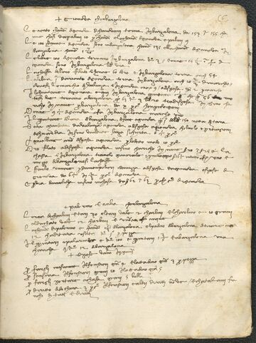
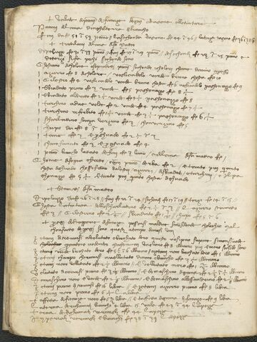
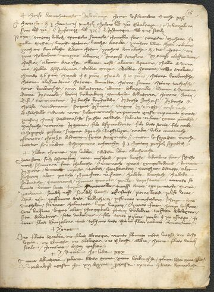
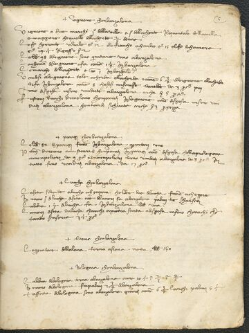

One merchant's working notebook of prices, weights, customs and exchange — a portable atlas of how Barcelona spoke to Florence, Alexandria to Bruges, in the language of the ragguaglio.
Around 1417–1429 a member of the Frescobaldi merchant house filled this vellum-bound volume with everything a trader needed to carry in his head: the qualities and weights of spices and wool, the duties levied port by port, the going prices of cloth and dye and silk, the fineness of coins, the calendar of fairs — and, above all, the ragguagli: the conversion rates that let a quantity, a coin or a measure in one city be reckoned exactly in another. It is a Mediterranean trading system, compressed into a notebook.

Deep-zoom IIIF facsimile beside the diplomatic transcription and a fresh English translation, leaf by leaf.

Flip through the whole notebook as a virtual book, the way it sits in the hand.

Filter every leaf by commodity, theme, place — saffron, alum, silver, silk — and jump straight to it.

Watch the marketplaces light up and the exchange-lines that connect them, pivoting on Barcelona.
The leaves fall into recognisable blocks — gazetteers of goods, conversion tables, cloth and dye lists, coin assays, regional surveys of Italy, fair calendars, a copied Pisan customs law, and memoranda on fitting out a galley.
Page after page, weights and money are reckoned against Barcelona — 98 pounds of Avignon to a Barcelona quintale, 95 of Bruges, 140 of Venice. Follow any commodity and the same hub reappears, a clearing-house for the western Mediterranean.
Explore the routes →